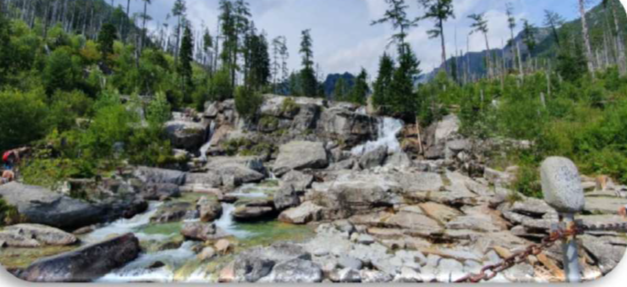

14.02.2026

Hrebienok
Słowackie Tatry i Wodospady Zimnej Wody...
Wolne miejsca

Nie błądź na szlaku! Pobierz naszą trasę i miej ją zawsze pod ręką w telefonie:
Nawiguj prosto z nadgarstka i otrzymuj powiadomienia o zejściu z trasy:
Wskazówka: Zegarek będzie wibrował, jeśli pomylisz ścieżki – to najbezpieczniejszy sposób na wędrówkę w nieznanym terenie!
Słowackie Tatry i Wodospady Zimnej Wody...
Na kolejną wycieczkę z cyklu MBŚ zapraszamy na Równicę...
Na powitanie wiosny zapraszamy w Beskid Wyspowy...
W trakcie kolejnej wycieczki z cyklu MBŚ zdobędziemy Smrk (1276 m n.p.m.), który jest...
Zapraszamy na wyjątkową, dwudniową wyprawę pełną panoramicznych widoków i dzikiej przyrody.